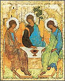

Se celebra la festividad de Corpus Christi. Dice en cardenal Bergoglio en la homilía:
-
En esta plaza que debiera ser tierra prometida como espacio simbólico de la Nación
..
Dice La Nación que
-
el Primado apeló a una frase evangélica para alentar a la feligresía:
"Pueblo mío, acuérdate con qué pan te alimenta nuestro Padre del Cielo y cómo son los panes falsos con que te ilusionaste y te llevaron a esta situación".
Además, en realidad no es mala frase. Sólo que, acaso para no molestar a nadie, no la desarrollamos mucho ... (¿cuáles son esos panes falsos ? ¿cuándo los comimos y quiénes nos los sirvieron? ).
Lo que me dejó perplejo es lo que sigue:
-
Enumeró luego las características "memoriosas" de acercarse a la comunión diaria.
A propósito del post anterior, estuve viendo esta paginita, un pequeño pero buen diccionario de argentinismos, de Alberto J. Miyara. Con muy buen sentido, y algunos toques de humor oportunos.
Entresaco algunas cosas (hay mucho más):
-
En Madrid, una vez pedí en una tienda un "buzo para arquero de hándbol". Después de 45 minutos de idas y venidas lingüísticas, con la vendedora llegamos a la conclusión de que se trataba de una "sudadera para portero de balonmano". Eso fue lo que me decidió a compilar este Diccionario.
birome. Boli. En 1943 Laszlo Biro descubrió en Buenos Aires que si se llenaba un canuto con tinta y se le incrustaba una bolilla en la punta se obtenía un elemento de escritura. En Argentina se lo llamó birome en homenaje al inventor. En España se lo bautizó boli en homenaje a la bolilla. Laszlo había nacido en Hungría, pero como patentó la birome en Buenos Aires lo consideramos un invento argentino. Si hubiera sido un inventor argentino trabajando en Budapest, también nos lo habríamos adjudicado.
-
boleta: Papeleta. En las elecciones. En Argentina se usa la boleta sábana, en la cual todos los candidatos a diputados por un distrito aparecen juntos y uno no puede separar la paja del grano cuando los vota. Aunque por otro lado es todo paja.
boludo: Gilipollas. Ésta es una de las tres o cuatro palabras argentinas más conocidas por los españoles. Sin embargo, los peninsulares no deberían usarla. No hay nada más ridículo que la palabra boludo pronunciada con acento español.
campera: Cazadora. Nombres ilógicos si los hay. Los españoles que usan cazadora en general jamás salieron de caza, y los argentinos que usan campera por lo común sólo conocen el campo como algo que se mueve detrás de las ventanillas de los trenes.
-
corpiño No un cuerpo pequeño en Galicia, sino el sostén de las mujeres. No el marido, sino la pieza de tela que sujeta el busto. No el busto de un prócer, sino...
Y mi preferido:
-
celular Móvil. Teléfono transportable para recibir llamadas en un teatro, cine o templo.
Interesante página, "1 de 3", sobre origen de palabras, frases hechas, tradiciones populares, juegos de palabras, etc.
Aunque estas cosas, por el mismo interés que despiertan en muchos, suelen estar plagadas de "leyendas urbanas" que pretenden ser ingeniosas, y ni son inteligentes, ni verdaderas....
(Me acuerdo ahora de ahora de esta idiotez de que "fuck" deriva de Fornication Under Consent of the King; etimología disparatada, pero que a tantos les encanta "conocer", por todo eso de qué-ridículos-y cuán-esclavos-eran-los-antiguos-y-qué-inteligentes-somos-los-modernos)
En este sitio, encontré otro ejemplo: eso de que colimba (en argot argentino:
conscripto, recluta del servicio militar) viene de COrra - LImpia - BArra.
Qué ingenioso (qué "idológicamente ingenioso", además), y qué estúpido.
"colimba" viene de milico - colimi - colimba
Un clásico vesre, unido a una deformación para hacer más sonora la
palabra. Esos son los recursos linguísticos de la gente... No hay ni una palabra
del lunfardo formada juntando sílabas iniciales, que yo sepa.
Habría más que decir, sobre esa curiosa disposición de los modernos (sobre todo de los escépticos profesionales, de los que se jactan de no ser crédulos como eran los antiguos... y como somos algunos) a creer en leyendas, que ni siquiera tienen el mérito de ser bellas o significativas.
Una página bastante original y trabajada sobre Gaudí, el famoso arquitecto catalán, autor -entre otras cosas- del sorprendente Templo Expiatorio de la Sagrada Familia de Barcelona, y cuya beatificación algunos están impulsando.
Más sobre la obra de Gaudí acá.
Me pasan este texto extraido de una página in memoriam (por respeto, no decimos de dónde ni de quién, y alteramos los datos):
-
...
Dos meses antes de su muerte pasó a la enfermería del hospital Santa Clara, donde le sorprendió la muerte el 5 de noviembre de 2001.
Dice La Nación de hoy: Con motivo de celebrarse mañana Corpus Christi, el Taller de Canto Gregoriano que dirige Claudio Morla realizará un concierto, a las 11, en la parroquia Nuestra Señora de la Rábida, Belgrano 1502.
No queda muy claro si el concierto es hoy o mañana... parece que hoy... Tal vez me doy una vueltita.
Una de esas notas enlatadas, directamente desde EEUU o Europa, que usa a veces Clarín... Las fingidas peleítas de las figuras del espectáculo de allá, que hacen ruido para tener publicidad (algo tipo Moria Casán vs Graciela Alfano acá); acá lo titulan como la batalla del bien y del mal ...
Es otra contribución desinteresada del gran diario de los argentinos, hacia el cretinismo completo del público lector.
(en inglés)
El weblog de Chesterton. Un pseudo-diario, con una cita de San Gilberto cada día...
Si querés aprender Historia Argentina leyendo La Nación, ... estás jodido:
-
SAN NICOLAS DE LOS ARROYOS (De un enviado especial).- La firma del acuerdo,
hace hoy un siglo, provocó una explosión de ira en amplios sectores de la población bonaerense
Esto, claro, no ocurrió en 1902, sino en 1852...
-
. . . . . . . . . . . . . . . . . . . . . . . . . . . . . . . .
Sólo una cosa hay necesaria: Todo.
El resto, es vanidad de vanidades.
. . . . . . . . . . . . . . . . . . . . . . . . . . . . . . . .
There is one sin: to call a green leaf grey,
Whereat the sun in heaven shuddereth.
There is one blasphemy: for death to pray
For God alone knoweth the praise of death.
There is one creed: 'neath no world-terror's wing
Apples forget to grow on apple-trees.
There is one thing is needful - everything
The rest is vanity of vanities.
G.K. Chesterton - Ecclesiastes
Cositas sueltas que me alegraron el día:
- El neocelandés-autraliano que mencioné una par de posts atrás tuvo la amabilidad
(tras un mail mío, presentándome y preguntándole si conocía weblogs cristianos en español)
tuvo la amabilidad, decía (cuándo dejáre de abusar de los paréntesis) ... de
incluirme en su lista. Y ahí estoy,
muy orondo, entre montones de prestigiosos webloggers cristianos del primer mundo...
y los parroquianos vecinos que se me acercan curiosos, y yo les informo con una sonrisa:
eskíusmi, ai onli spík spanish... Gracias.
- Se me ocurre visitar a la vecina de arriba (sigo hablando de la lista de blogs, eh...),
una tal Emily, y resulta
ser una católica con unos cuantos gustos comunes ... (a los míos!)... Su lista de "los hombres de mi vida"
comienza con : Juan Pablo II, C. S. Lewis, Chesterton y Wodehouse. Mejor, casi imposible.
Y tiene unas cositas graciosas que acaso después traduciré/postearé.
- Recibo un mail muy amable e interesante de H. Fenoglio, el de la revista Parte de guerra,
que mencioné
elogiosamente alguna vez. Voy a tener que ponerme a pensar y a escribir, parece...
- Encuentro que rominatrix ha cumplido
su promesa de Lectura para el almuerzo, y ha puesto on-line un libro (en inglés) entero de ....
no digo el nombre, mejor, por las dudas (el tipo es o era muy histérico en esas cuestiones
de piraterías, y sus abogados han hecho dar de baja más de un sitio web). Pasen y vean.
- En la biografía linkeada en dicho sitio de dicho (o no dicho) autor, se encuentra a su vez un link a un fragmento de su libro más famoso. Ese fragmento está macheteado (copy y paste sin asco) de una paginita de un servidor de ustedes... Y encima eran los tiempos en que no tenía scanner; tipeando nomás, y argentinizando la traducción, también... Bueh, pensándolo bien, es más para alegrarse que para enojarse.
Buscando material sobre Kierkegaard y la repetición, encuentro este ensayo (en pdf) que parece interesante.
Y es de un sueco pero está en español.
Y es de un tipo que evidentemente sabe algo más de K. que aquellos que lo esterotipan con expresiones como angustia existencialista (en sentido psicológico-romántico).
Y que, a la hora de analizar la filosofía de K., no nos sale con textos de Sartre o Foucalt, sino que (oh maravilla!) estudia los textos del mismo Kierkegaard. Y más aún, de su obra religiosa; en particular, de Las obras del amor.
No sé si el ensayo será gran cosa, pero todo esto no es poco.
Martin Roth, neocelandés en Australia, tiene un weblog con una lista impresionante de weblogs cristianos.
Martin no es católico, pero tampoco es de los que se niegan a considerar "cristianos" a los católicos; y así es que incluye, entre muchos otros, los weblogs católicos que tengo en mis links.
En spanish, nada...

"La lechera", de Vermeer, uno de mis pintores favoritos (holandés, 1632-1675).
Otros cuadros para ver son:
Hay mucho y buen material en Artchive: Vermeer{kind=link}
{kind=link}
{kind=link}
{kind=link}
(link de rominatrix).
(en inglés)
Un artículo periodístico Are the Jesuits Catholic? sobre el estado de la orden de San Ignacio, a propósito de un libro reciente ( Passionate Uncertainty ) ; muy crítico, y por un jesuita. Todavía no la leí a fondo, pero parece cosa fuerte...
-
"As I get older, I find myself less church centered," says a senior academic. The hero of McDonough and Bianchi's story, the passionately uncertain Jesuit, like a man separated from a wife of thirty years, preserves an icy courtesy in referring to his spouse and fulfills the bare minimum of social duties. He may be convinced that he has arrived at the best possible truce given his rocky personal history; but no young man--at least no young man with real options--chooses to give his life to a truce. It is a lonely senescence. Here and there are rumors of courage, devotion, even faith. But the passionately uncertain Jesuit finds himself enclosed in a small corner of a small world, with the waning consolations of sodomy and single-malt whiskey, tottering down the corridors of an increasingly ominous twilight.
En Lunes Felices (weblog) marcos se duele de la muerte del rock, lamenta que éste haya dejado de ser algo interesante y vivo y añora los tiempos cuando Pipo Cipolatti era "irónico" (?). Ahora, oh escándalo! :
-
- Un "rockero" tiene un hijo y lo bautiza en la Iglesia católica.
-
1. Tener un hijo (esto no está mal visto -aunque más rockero sería abortar- ; pero lo malo
sería tener más de tres, que Dios -perdón, la Onu- no lo permitan)
2. Bautizarlo (esto es ya es caca; un rockero no puede someterse a estas convenciones de una sociedad caduca y la religión es el opio de los pueblos y el pecado original es un mito alienante y etc ... si fuera un bautismo simbólico, o según algún rito guaraní o inca o azteca ....sería otra cosa )
3. en la Iglesia católica (aaaghhhh!!!! noo!! eso nunca!!!!)
Modestísima pero ilustrativa paradoja (los ingenieros preferimos hablar de realimentación negativa) a cuento de algunos inconformismos tan militantes como ingenuos (en el mejor de los casos) o frívolos (en el peor).
- Atención: No se reciben billetes falsos.
Caso contrario se lo retendrá y se llamará a la policía.
Pareciera que este es el único weblog argentino -o de lengua española- católico en la red... Caramba, qué mal estamos...
Bueno, sermoneemos un poco, entonces:
Hoy en misa se leyó el pasaje del evangelio:
-
Mc. 10, 28-31:
Entonces Pedro le dijo: «Nosotros lo hemos dejado todo para seguirte.» Y Jesús contestó: «En verdad les digo: Ninguno que haya dejado casa, hermanos, hermanas, madre, padre, hijos o campos por mi causa y por el Evangelio quedará sin recompensa. Pues, aun con persecuciones, recibirá cien veces más en la presente vida en casas, hermanos, hermanas, hijos y campos, y en el mundo venidero la vida eterna.
Uno no ha dejado mucho que digamos por segur a Jesús, ni hablar de padre, hijos, casa... Y mirando alrededor, francamente... a quién se aplican esas palabras ?
Y el mismo Pedro ... Está bien, se entiende que preguntara eso, él tan ingenuo y bocón ...
aunque no parece que el hubiera dejado mucho (el barco y las redes... quién sabe cuánto y cómo).
Sin embargo, Jesús le da -parece- la razón, en lugar de responderle con
el más lógico: "ma qué vas a dejar, vos... todavía no tenés idea de lo es abandonarse de verdad"...
Acaso, como otras veces, Jesús está mirando y hablando en dos planos... y sabe que el renunciamiento de Pedro,
si bien mucho más modesto de lo que él cree, es prefigura del abandono verdadero, que vendrá dentro de algunos
pocos años ... cuando "otros te tomarán de la mano y te llevarán donde no quieres".
Sea así, o sea que los discípulos ya entonces habían dejado todo por seguirlo y merecían pues el premio prometido ... da que pensar: ... en qué sentido y en qué medida uno debe abandonar lo que ama, y tratar de ganarse ese premio... Hasta parece egoísta, mal mirado.
Y por otro lado, también es sorprendente esa promesa de recuperar lo abandonado en esta vida. Seguramente esto hay que entenderlo pensando un poquito, no se trata de las promesas de los manosantas, pastores truchos o autoayudantes ( cambia tu vida, consigue trabajo y amor, deja de sufrir). Pero tampoco es cuestión de diluir semejante promesa en palabrerío "espiritual"...
Pensemos pues, como pensaba Kierkegaard ... (la repetición, una de sus "categorías" y uno de sus libros). Precisamente, sólo en el estadio religioso, se da la auténtica repetición (o reduplicación). No estoy seguro de entenderlo, sin embargo...
Y ahora no tengo tiempo, que tengo que hacer un examen para tomar mañana ...
En Obscuridad nocturna, un post con algunas observaciones sensatas y con algunas frases cómicas:
-
No soy una santa, tampoco una mojigata... Estoy muy lejos de serlo, no soy una persona conservadora y mucho menos políticamente correcta
Otra muestra de algo parecido -gente que se complace imaginándose en la contracultura- en la presentación de este clique (agrupación de weblogs): el discurso sobre el espíritu de la cosa, es una muestra de lo que imaginan ser; las prohibiciones sobre el contenido, son una muestra de lo que en verdad son: parte de la cultura, parte de la religión.
Impresionantes estas reproducciones "casi originales" de manuscritos medivales iluminados, en Editorial Moleiro. Una belleza.
Los vi por acá en la Feria del Libro del año pasado, y ahora me arrepiento de no haber comprado alguno.
Agregué un link a un blog católico yanqui más... el de Gerard Serafin: A catholic blog for lovers. Uno más de una cantidad asombrosa de weblogs católicos que están apareciendo, parece que es una moda fuerte por allá (hasta he leído alguna mención sobre "los fieles de la parroquia San Blog" o algo parecido). No está mal. Por estos pagos -y en este idioma-, poco o nada, como era de esperar...
A este Gerard Serafin lo conocía por su página
A Catholic Page for Lovers que , sin ser
un lujo en el diseño, tiene mucho material de mi gusto, mucha literatura
y con un pathos (gozoso sin ser tonto) que también me atrae;
a veces los yanquis me cansan con su particular forma de militancia...
Y éste hoy citó a Leon Bloy en un
post....
(aunque sea una frase); no cualquiera...
Y uno, especie de converso libresco, no puede menos que simpatizar mucho con páginas como ésta o ésta... Acá sí que uno se siente como en casa...
Dylan Thomas, un poeta que tiene lo suyo...
Un poeta celebratorio, que no es poco. Aunque difícil, para mí al menos.
Además era bueno recitando. Tengo por ahí alguna grabación de él recitando una de G. M. Hopkins... quedará para otra vez; hoy quiero postear un mp3 de Dylan Thomas leyendo uno de sus propias poemas (y uno de los más simples y más conocidos):
-
Do not go gentle into that good night,
Old age should burn and rave at close of day;
Rage, rage against the dying of the light.
Though wise men at their end know dark is right,
Because their words had forked no lightning they
Do not go gentle into that good night.
Good men, the last wave by, crying how bright
Their frail deeds might have danced in a green bay,
Rage, rage against the dying of the light.
Wild men who caught and sang the sun in flight,
And learn, too late, they grieved it on its way,
Do not go gentle into that good night.
Grave men, near death, who see with blinding sight
Blind eyes could blaze like meteors and be gay,
Rage, rage against the dying of the light.
And you, my father, there on the sad height,
Curse, bless me now with your fierce tears, I pray.
Do not go gentle into that good night.
Rage, rage against the dying of the light.
[Audio] (mp3, 760 kb)
Acá hay una traducción, no mala, a primera vista. Hoy, domingo siguiente a Pentecostés, la Iglesia celebra la Fiesta de la Santísima Trinidad
Misa en iglesia de San Carlos, el mismo cura del domingo pasado;
buen sermón. Como están las cosas, ya uno se considera agradablemente
sorprendido si el cura, en la fiesta de la Trinidad habla de ... la Trinidad.
Dice, entre otras cosas, algo que en su humildad me gusta y me parece adecuado:
La Señal de la Cruz como una expresión de lo esencial de nuestra fe:
la Trinidad (en las palabras) y la Redención (en el gesto).
Que los jugadores de fútbol se persignen al entrar o salir de la cancha, uno puede verlo
con tristeza, como una lamentable trivialización (supersticiosa y aún sacrílega)
de algo específicamente cristiano.
Y también puede verlo con simpatía, como una expresión más de ese abajamiento
voluntario de Cristo hacia los humildes...
No sé cuál será el modo correcto de verlo. Yo, según las circustancias, el día, el humor, la humedad...
lo veo de una manera o de otra.
Suena el despertador. Lo apago, y me duermo de nuevo para soñar esto:
-
De noche, saliendo del trabajo; Jonás se ofrece a llevarme en su auto, pero yo dudo ;
¿voy a comer a algún lugar ? De pronto recuerdo: yo había entrado, una hora antes, a un
bar cercano a cenar, había pedido cuatro empanadas, y cuando estaba terminando,
Jonás me había llamado con urgencia para completar algo del trabajo.
Vuelvo entonces al bar; (es uno de eso de las galerías del centro; Jonás y Fer se han ido por la escalera sin saludar... o yo me he escapado de ellos sin avisar) Al tiempo que tomo asiento en una mesa, advierto, un poco asustado, que me fui sin pagar. Un mozo joven me mira con cara de pocos amigos, y yo me apresuro a aclarar, con una sonrisa que pretende ser muy jocosa:
_ Yo estaba acá comiendo, me llamaron urgente, y me olvidé de pagar... no ?
_ Sí ... -me responde, serio - ... Calabazas con huevos fritos
_ No, no! - (yo jamás pediría semejante cosa) - eran empanadas...
Miro alrededor y ubico a otro mozo, más viejo y gordo, que se acerca.
_ Usted, me atendió, no ? Yo pedí cuatro empanadas; y había comido tres, y me vinieron a buscar ..
_ Sí, sí - dice, bonachón, sin darle importancia.- Ya te había pasado antes, con el otro Primer Ministro.
(Primer Ministro? parece que quiere decir "jefe" y asume que los que me llaman para ir trabajar son mis jefes; y parece que cree conocerme y conocerlos...).
Igual, ahora todo está en orden. Yo estoy sentado a una mesa, comiendo la cuarta empanada; a mi derecha, se ha sentado el mozo (sonriendo, bandeja y trapo rejilla a un lado). Y en la silla de enfrente ahora está comiendo un hombre mayor, parroquiano habitual, uno diría.
_ Yo había pedido empanadas ... -sigo explicando estúpidamente.
_ ¿Estaban buenas? -me pregunta el mozo.
No eran gran cosa, pienso (en realidad, veo ahora despierto, son las que comí anoche, en casa) aunque abundantes.
_ Sí - digo, amable ... o tímido- , eran .. abundantes...
El mozo asiente, yo estoy a punto de agregar "Me costó terminarlas", pero advierto a tiempo que eso no se corresponde con el hecho de estar ahora comiendo la cuarta.
Silencio prolongado.
Se me ha caído un pedacito de empanada sobre la mesa. Pero el hombre de enfrente ha hecho un desastre mucho peor: está comiendo papas con mayonesa y huevo, y ha tirado la mitad sobre la mesa, a la derecha de su plato. Parece que a propósito. Y acomoda o revuelve con el tenedor las papas caídas, y las espolvorea con algo... pienso que está tirando algo combustible, y va a prender fuego todo. Después veo que se trata de queso rallado.
El mozo bonachón observa, en perfecta calma.
En Maldita sea anotician del sitio book - a - minute, con libros ultraresumidos.
Muy divertido, para la rata de biblioteca que es uno.... Me han hecho reír de lo lindo.
Por ejemplo:
Ultra-Condensed by Samuel Stoddard and David J. Parker
Some Guy
Oh no. I'm buried alive!
Narrator
I died.
Raven
Nevermore.
THE END
By H. G. Wells
Ultra-Condensed by David J. Parker
The Invisible Man
I turned myself invisible, and it SUCKS.
THE END
Las del Señor de los Anillos también están buenas.
Claro que hay gran mayoría de literatura inglesa-norteamericana.
En el post
Javier propone una versión del Martín Fierro; y en verso! No está nada mal...
-
... miró a Franny
- ¿ Me escuchas o no?
- Sí.
- Tienes a dos de los mejores profesores del país en tu maldito Departamento de Inglés. Manlius. Espósito. Dios mío, ya quisiera yo tenerlos aquí. Por lo menos son poetas.
- No, no lo son -dijo Franny-. En parte eso es lo espantoso. Quiero decir que no son verdaderos poetas. No son más que personas que escriben poemas que se publican y aparecen en antologías por todas partes, pero no son poetas.
Se calló, incómoda, y apagó el cigarrillo. Desde
hacía minutos había ido palideciendo. De repente
su lápiz de labios parecía un tono o dos más claro,
como si se lo hubiese quitado con un pañuelo de papel.
- No hablemos de eso -dijo, casi con indiferencia,
aplastando la colilla en el cenicero-. Estoy desatada.
Voy a estropearte el fin de semana. Ojalá hubiera
una trampa debajo de mi silla y me hiciera desaparecer.
El camarero se acercó un momento y dejó otro Martini
delante de cada uno. Lane rodeó con sus dedos -que eran
finos y largos y casi siempre estaban a la vista-
el pie de la copa.
- No estás "estropeando" nada -dijo en voz baja. Simplemente
me interesa averiguar de qué diablos se trata. Quiero decir,
¿hay que ser un maldito bohemio, o estar muerto, por Dios
santo, para ser un "verdadero poeta"? ¿ Qué es lo que
quieres, un idiota de pelo largo ?
- No. ¿ Por qué no lo dejamos pasar ? Por favor. Me siento
absolutamente fatal, y me está entrando un terrible...
- Estaría encantado de dejar el tema.... me encantaría. Pero
dime primero qué es un "verdadero poeta", si no te importa.
Me encantaría. De verdad.
Había un ligero brillo de transpiración en la frente de
Franny. Posiblemente era sólo que hacía demasiado calor
en el comedor, o que los martinis estaban demasiado fuertes,
o que tenía el estómago revuelto; en cualquier caso, Lane
no pareció notarlo.
- No sé qué es un verdadero poeta. Me gustaría que terminaras,
Lane. En serio. Me siento muy mal y muy rara, y no puedo ...
- Está bien, está bien... De acuerdo. Tranquila -dijo Lane-.
Sólo trataba de ...
- Lo que yo sé es esto, nada más -dijo Franny-. Que si eres
poeta, haces algo hermoso. Quiero decir que dejas algo
hermoso cuando terminas la página o lo que sea. Esos de los
que tú hablas no dejan ni una sola cosa hermosa. Lo único que
hacen, tal vez, los que son algo mejores, es meterse en tu cabeza
y dejar "algo" allí, pero el que lo hagan, el que sepan
"dejar algo" no significa que sea un poema, no ¡por Dios!
Puede tratarse simplemente de una especie de excrementos,
terriblemente fascinantes y sintácticos, con perdón. Como
pasa con Manlius y Espósito y todos esos pobres hombres.
Lane se tomó tiempo para encender un cigarrillo antes de
decir nada.
- Creí que te caía bien Manlius. De hecho, si no recuerdo mal,
hace aproximadamente un mes, dijiste que era "un encanto"y
que tú ...
- Y me cae bien. Estoy harta de que la gente me caiga bien
solamente. Quisiera conocer alguien que pudiese respetar...
¿Me disculpas un momento?
Franny se puso de pie con el bolso en la mano. Estaba muy
pálida.
...
Franny & Zooey